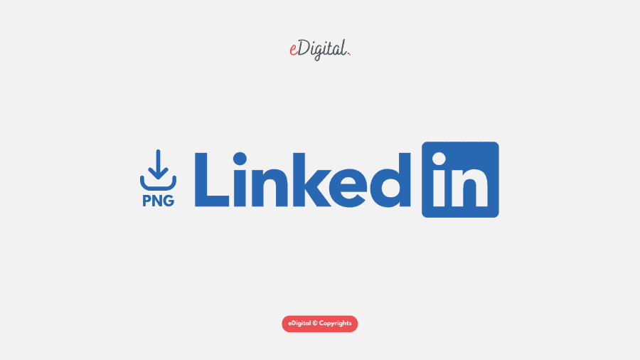

Aqui você encontra os meus sites favoritos, juntamente com a imagem e o link para conhecer um pouco mais cada um deles!
Abaixo serão exibidas as imagens do site e logo em seguida o link para que você possa visualizar o conteúdo.
Neste site realizo pesquisas, fomento meus estudos em desenvolvimento de sistemas, tiro minhas dúvidas e aprimoro receitas que costumo fazer.
Link para o GoogleNeste site realizo pesquisas, desenvolvo meus conhecimentos tanto na técnologia de forma mais divertida e visual
Link para o YoutubeNeste site realizo pesquisas, desenvolvo meu portifólio e gero conexão com pessoas da área da tecnologia
Link para meu GithubNeste site pesquiso por vagas no mercado de trabalho tecnológico, desenvolvo meu portifólio e gero conexão com pessoas da área da tecnologia

Link para meu LinkedinNeste site realizo conexões com minhas colegas do bootcamp que estou fazendo em Java.
Link para o Discord